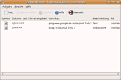
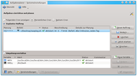

Cron
Dieser Artikel wurde für die folgenden Ubuntu-Versionen getestet:
Dieser Artikel ist größtenteils für alle Ubuntu-Versionen gültig.
Zum Verständnis dieses Artikels sind folgende Seiten hilfreich:
Pakete installieren, optional
 Der Cron-Daemon ist ein Dienst, der automatisch Skripte und Programme zu vorgegebenen Zeiten starten kann. Der auszuführende Befehl wird in einer Tabelle, der "crontab", gespeichert. Es gibt eine systemweite Datei /etc/crontab, die nur mit Root-Rechten bearbeitet werden kann. Zusätzlich kann jeder Benutzer eine eigene Crontab erstellen, die man dann im Verzeichnis /var/spool/cron/crontabs/ findet.
Der Cron-Daemon ist ein Dienst, der automatisch Skripte und Programme zu vorgegebenen Zeiten starten kann. Der auszuführende Befehl wird in einer Tabelle, der "crontab", gespeichert. Es gibt eine systemweite Datei /etc/crontab, die nur mit Root-Rechten bearbeitet werden kann. Zusätzlich kann jeder Benutzer eine eigene Crontab erstellen, die man dann im Verzeichnis /var/spool/cron/crontabs/ findet.
Diese Tabelle besteht aus sieben bzw. sechs Spalten. Die ersten fünf dienen der Zeitangabe (Minute, Stunde, Tag, Monat, Wochentage) für einen Cronjob, dann folgt (nur in der systemweiten Crontab) der Benutzername, unter dem der Befehl ausgeführt werden soll, und die letzte enthält den Befehl. Die einzelnen Spalten werden durch Leerzeichen oder Tabulatoren getrennt.
Hinweis:
Sollte während der automatisierten Ausführung ein Fehler auftreten, so versucht Cron, diese Fehlermeldung per E-Mail an den Systemadministrator bzw. den Benutzer zu schicken. Dies ist allerdings nur möglich, wenn ein sogenannter "Mail Transfer Agent" oder kurz MTA - beispielsweise Postfix - installiert ist.
Installation¶
Der Dienst und seine Verwaltungswerkzeuge für die Kommandozeile ist in jeder Ubuntu-Installation bereits enthalten und ist im Paket
cron
enthalten.
Cronjobs über eine GUI bearbeiten¶

Für zahlreiche auf der Grafikbibliothek GTK basierenden Desktop-Umgebungen gibt es das Programm GNOME Schedule, um Cronjobs über eine grafische Oberfläche verwalten zu können. Nähere Informationen finden sich auf der Seite von GNOME Schedule.

KDE¶
Unter KDE gibt es für diese Aufgabe das Paket kde-config-cron. Das Programm ist Teil des KDE Metapakets kdeadmin. Nach der Installation findet man es unter
"Systemeinstellungen -> Systemverwaltung -> Aufgabenplaner"
Cronjobs manuell einrichten¶
Eine Crontab für einen Benutzer einrichten¶
Um eine eigene Tabelle für einen Benutzer einzurichten, muss man ein Terminal-Fenster öffnen [1] und den Befehl zum Editieren der Tabelle eingeben:
crontab -e
Aus historischen Gründen wird eine Crontab mit einem Kommandozeileneditor bearbeitet. Wurde noch kein Editor festgelegt, erscheint folgende Auswahl:
no crontab for BENUTZERNAME - using an empty one Select an editor. To change later, run 'select-editor'. 1. /bin/ed 2. /bin/nano <---- easiest 3. /usr/bin/jmacs 4. /usr/bin/joe 5. /usr/bin/jpico 6. /usr/bin/jstar 7. /usr/bin/rjoe 8. /usr/bin/vim.tiny Choose 1-8 [2]:
Der ausgewählte Editor wird in der versteckten Datei ~/.selected_editor im Homeverzeichnis gespeichert. Möchte man die getroffene Entscheidung später wieder ändern, löscht man diese Datei oder benutzt wie angegeben den Befehl:
select-editor
Alternativ – falls man den Editor nur für die aktuelle Bearbeitung ändern möchte – kann dieser auch direkt angegeben werden (hier am Beispiel von VIM):
EDITOR=vim.tiny crontab -e
Besaß der Benutzer bisher noch keine Crontab, so enthält die Datei nur ein paar Kommentare. Hier ein Beispiel für eine Crontab:
#----------------------------------------------------------------- # Shell variable for cron SHELL=/bin/bash # PATH variable for cron PATH=/usr/local/bin:/usr/local/sbin:/sbin:/usr/sbin:/bin:/usr/bin:/usr/bin/X11 #M S T M W Befehl #----------------------------------------------------------------- 5 9-20 * * * /home/BENUTZERNAME/script/script1.sh > /dev/null */10 * * * * /usr/bin/script2.sh > /dev/null 2>&1 59 23 * * 0,4 cp QUELLDATEI ZIELDATEI * * * * * DISPLAY=:0 LANG=de_DE.UTF-8 zenity --info --text "Beispiel für das Starten eines Programms mit GUI" 0 0 * * * backup #-----------------------------------------------------------------
Im ersten Abschnitt stehen die Angaben für die Variablen $PATH und $SHELL. Im unteren Teil dann die einzelnen Cronjobs. In einer Zeile kommen zuerst die fünf Felder für die Zeiten (Minute, Stunde, Tag, Monat, Wochentage) und danach der auszuführende Befehl. In diesem Beispiel werden die Befehle
Fünf Minuten nach jeder vollen Stunde zwischen 9 und 20 Uhr (also 9:05, 10:05, ..., 20:05)
Alle 10 Minuten
Jeden Sonntag und Donnerstag um 23:59
Jede Minute ein Programm mit GUI, das die Display- und die Sprach-Variable benötigt
Jeden Tag Punkt Mitternacht 00:00 Uhr
ausgeführt.
Hinweis:
Wichtig ist, dass am Ende der Tabelle ein Kommentar oder eine Leerzeile stehen. Ähnlich wie die fstab muss die crontab mit einer Leerzeile enden!
Erzeugt der durch den Cron-Daemon aufgerufene Befehl eine Ausgabe, so wird alles, was auf der Konsole ausgegeben wird, an den Benutzer per E-Mail geschickt, unter dessen Benutzerkonto der Befehl ausgeführt wurde. Möchte man dies nicht, so muss man die Ausgabe umleiten.
Als Beispiel soll ein Server daraufhin überprüft werden, ob dieser online ist. Hierzu wird alle fünf Minuten ein Ping an den Rechner geschickt. Ein erfolgreicher Ping ist uninteressant, im Falle eines Fehlers sollte jedoch der Cronjob eine E-Mail mit dem Ergebnis des gescheiterten Pings ausgeben. Dies erreicht man, indem die Standardausgabe an /dev/null umleitet. Fehlermeldungen werden dadurch - wie gewünscht - verschickt, das positive Ergebnis verworfen.
*/5 * * * * ping -c 1 192.168.0.1 > /dev/null
Möchte man keinerlei Ausgaben des Cronjobs erhalten - z. B. bei einem regelmäßigen Ping an eine Internetadresse, um zu verhindern, dass die Dial-Up-Verbindung getrennt wird - so muss die Weiterleitung wie folgt aussehen:
*/5 * * * * ping -c 1 www.google.de > /dev/null 2>&1
Dadurch wird jegliche Ausgabe des Cronjobs verworfen. Mehr Informationen zur Weiterleitung findet man im Artikel zu Umleitungen.
Hier ist noch kurz eine Übersicht, wie sich der Cronjob aufbaut:
* * * * * Befehl der ausgeführt werden soll - - - - - | | | | | | | | | +----- Wochentag (0 - 7) (Sonntag ist 0 und 7; oder Namen, siehe unten) | | | +------- Monat (1 - 12) | | +--------- Tag (1 - 31) | +----------- Stunde (0 - 23) +------------- Minute (0 - 59; oder Namen, siehe unten)
Für die Wochentage und die Monate können die drei ersten Buchstaben des englischen Namen benutzt werden, z. B. Sun für Sonntag. Groß-/Kleinschreibung spielt dabei keine Rolle, allerdings sind keine Angaben von Zeiträumen erlaubt, dazu müssen Ziffern verwendet werden.
Angaben von Zeiträumen und Schrittweiten innerhalb dieser Zeiträume sind erlaubt, sofern Ziffern benutzt werden. Setzt man beispielsweise für die Stunde 8-10, wird der Befehl in den Stunden 8, 9 und 10 Uhr ausgeführt. Statt der Schreibweise 8-10 kann auch 8,9,10 geschrieben werden.
Setzt man hingegen */2 wird der Befehl jede zweite Stunde ausgeführt. Beides kann kombiniert werden, so bedeutet 1-9/2 dasselbe wie 1,3,5,7,9.
Man sollte aber bedenken, dass * */2 * * * beispielsweise den Befehl 60 mal (also zu jeder Minute) jede zweite Stunde ausführt.
Zur Vereinfachung können die ersten fünf Felder auch durch eine einzelne Zeichenkette ersetzt werden. Hierfür sind acht Schlüsselwörter definiert:
| String | Bedeutung | cron-Schreibweise |
@reboot | einmalig, beim Start | |
@daily | einmal pro Tag | 0 0 * * * |
@midnight | einmal pro Tag | 0 0 * * * |
@hourly | einmal pro Stunde | 0 * * * * |
@weekly | einmal pro Woche | 0 0 * * 0 |
@monthly | einmal im Monat | 0 0 1 * * |
@annually | einmal im Jahr | 0 0 1 1 * |
@yearly | einmal im Jahr | 0 0 1 1 * |
Benachrichtigungen für bestimmte Benutzer versenden¶
Mit der MAILTO-Variable kann ein Empfänger für die Benachrichtigungen unabhängig vom Besitzer der Cron-Tabelle festgelegt werden (MAILTO=irgendwer). Wird die Variable als inhaltsleer deklariert (MAILTO=""), so werden keine Benachrichtigungen versendet.
Cron-Tabelle des Benutzers Root¶
Natürlich kann auch root eine Crontab anlegen. Alle Cronjobs, die in dieser Tabelle stehen, werden mit Root-Rechten ausgeführt:
sudo crontab -e
Die systemweite Cron-Tabelle /etc/crontab¶
Möchte man jedoch einen Cronjob erstellen, der mit speziellen Rechten ausgeführt werden soll, so bietet es sich an, diesen Job in die systemweite Cron-Tabelle einzutragen. Diese Tabelle unterscheidet sich nicht stark von einer normalen Cron-Tabelle, sie besitzt jedoch noch eine Spalte mehr, in der der Benutzer eingetragen wird, unter dem der jeweilige Befehl ausgeführt werden soll.
# /etc/crontab: system-wide crontab # Unlike any other crontab you don't have to run the `crontab' # command to install the new version when you edit this file. # This file also has a username field, that none of the other crontabs do. SHELL=/bin/sh PATH=/usr/local/sbin:/usr/local/bin:/sbin:/bin:/usr/sbin:/usr/bin # m h dom mon dow user command 17 * * * * root run-parts --report /etc/cron.hourly 59 23 * * * username /pfad/zu/skript.sh
Dies ist besonders nützlich, wenn Server, die ihren eigenen Benutzer haben, wie z.B. Apache mit www-data, über cronjobs gesteuert werden sollen. Oder wenn man für Benutzer Jobs anlegen möchte, die der Nutzer jedoch selber nicht verändern können soll.
Hinweis:
Neben der /etc/crontab werden auch alle Dateien im Verzeichnis /etc/cron.d/ von Cron gelesen. Dieses Verzeichnis ist dafür gedacht, dass Pakete, die eigene Cronjobs mitbringen, diese ablegen können. Es wird empfohlen, für eigene Cronjobs die /etc/crontab zu verwenden.
Ruft man die manpage für crontab mit man crontab auf, so wird die manpage für das Programm crontab angezeigt. Die manpage für die Struktur der Tabelle bekommt man zu Gesicht, wenn man man 5 crontab aufruft - 5 steht für die Gruppe der Konfigurationsdateien.
Anacron - Anac(h)ronistic Cron¶
Cron startet einzelne Cronjobs immer nur zu den eingetragenen Zeiten. Legt man also einen Cronjob an, der täglich um 18.00 Uhr ausgeführt wird, so wird der Job an diesem Tag nur ausgeführt, wenn der Rechner um Punkt 18 Uhr angeschaltet war. Für Jobs, die regelmäßig ausgeführt werden müssen, wobei der Rechner nicht durchgehend läuft, ist Cron daher nicht ideal. Wenn man Pech hat, wird z.B. eine wichtige Datensicherung ("backup") verpasst.
Als Ergänzung zu Cron bietet sich daher Anacron an. Anacron ist ein cron-ähnlicher Taskplaner, allerdings erfordert er nicht das kontinuierliche Laufen des Systems. Er kann zum Ausführen von täglich, wöchentlich oder monatlich (und ab Ubuntu 14.04 auch stündlich) anstehenden Aufträgen verwendet werden, die normalerweise von cron ausgeführt werden.
Anstatt einer Crontab muss nur das auszuführende Skript oder Programm in das entsprechende Verzeichnis des Anacron-Dienstes kopiert oder verlinkt werden.
/etc/cron.hourly/ - stündlich auszuführen, erst ab Ubuntu 14.04
/etc/cron.daily/ - täglich auszuführen
/etc/cron.weekly/ - wöchentlich auszuführen
/etc/cron.monthly/ - monatlich auszuführen
Die Namen der Verzeichnisse sprechen für sich. Skripte, die dort abgelegt sind, werden auch durch den Anacron-Dienst ausgeführt. Am besten schaut man sich kurz die Skripte in diesen Verzeichnissen an, bevor man selber dort etwas ablegt.
Hinweis:
Der Skriptname darf nur große und kleine Buchstaben, Ziffern, Unterstriche und Bindestriche enthalten. Andernfalls wird das Skript nicht ausgeführt. Das exakte Zeichenalphabet wird durch folgenden regulären Ausdruck definiert: "^[a-zA-Z0-9_-]+$". Punkt und Umlaute sind also beispielsweise nicht erlaubt.
Wenn ein Laptop ohne Netzstrom läuft, werden Anacron und alle ggf. laufenden Aufgaben beendet. Sobald der Laptop an die Stromversorgung angeschlossen wird, wird Anacron wieder gestartet. Zuständig dafür ist die Datei /usr/lib/pm-utils/power.d/anacron.
Anacron-Konfiguration¶
Möchte man Jobs täglich, wöchentlich oder monatlich (oder stündlich ab Ubuntu 14.04) ausführen, muss keine Konfiguration für Anacron vorgenommen werden. Es ist aber möglich, die Perioden zu verändern. Dazu ändert man die Konfigurationsdatei /etc/anacrontab. Kürzere Perioden als täglich sind in anacrontab vor Ubuntu 14.04 nicht einstellbar (dafür verwendet man Cron), ab Ubuntu 14.04 gibt es das Verzeichnis /etc/cron.hourly/.
Die Datei erwartet folgendes Format:
* * * Befehl der ausgeführt werden soll | | | | | +--------- job-identifier (Datei für den Zeitstempel) | +----------- delay (Zeitverzögerung nach Systemstart in Minuten) +------------- period (Zeit in Tagen)
Beispiel für period-Angabe:
1 – täglich
7 – wöchentlich
30 – monatlich
Es ist jede andere Zahl möglich.
Für monatliche Jobs kann als Periode auch @monthly verwendet werden.
| Feld | Bedeutung |
period | Periode der Jobausführung in Tagen |
delay | Startverzögerung des Jobs nach Systemstart (in Minuten) |
job-identifier | Zeitstempel Datei, in diese wird der Zeitstempel geschrieben, damit der Job innerhalb der Periode nur einmal ausgeführt wird. Z. B. Bei täglichen Aufgaben aber mehrmaligem Start des Systems an einem Tag. |
command | Befehl oder auszuführendes Skript |
Die Standardeinstellungen in /etc/anacrontab am Beispiel von Ubuntu 11.10:
# /etc/anacrontab: configuration file for anacron # See anacron(8) and anacrontab(5) for details. SHELL=/bin/sh PATH=/usr/local/sbin:/usr/local/bin:/sbin:/bin:/usr/sbin:/usr/bin # These replace cron's entries 1 5 cron.daily nice run-parts --report /etc/cron.daily 7 10 cron.weekly nice run-parts --report /etc/cron.weekly @monthly 15 cron.monthly nice run-parts --report /etc/cron.monthly
Weitere Umgebungsvariablen, die in der Beispieldatei in den Block zu SHELL und PATH hinzugefügt werden können:
MAILTO- Wie auch in der /etc/crontab ist es in der /etc/anacrontab möglich, vom System automatisch E-Mails versenden zu lassen:MAILTO="user@localhost"
Für den E-Mail-Versand muss ein MTA (Mail Transfer Agent) wie z.B. postfix installiert sein.
Tricks¶
Zugriff auf GNOME-Keyring ermöglichen¶
Konfigurationen wie zum Beispiel Offlineimap benötigen je nach Einrichtung einen Zugriff auf den GNOME-Schlüsselring. Dazu muss die DBUS_SESSION_BUS_ADDRESS als Umgebungsvariable gesetzt sein. Ein mögliches Szenario besteht darin, nach der Anmeldung die Variable zu exportieren und die Adresse in einer versteckten Konfiguration im Homeverzeichnis zu hinterlegen. Der Cronjob kann dann auf die entsprechenden Werte zurückgreifen und so Zugriff auf den Schlüsselbund erlangen.
Dazu folgendes Startscript erstellen
1 2 3 4 5 6 7 8 | #!/bin/bash # Exportiere die dbus session address, damit sie via Cron nutzbar ist # Diese Datei muss via Autostart ausgeführt werden touch $HOME/.Xdbus chmod 600 $HOME/.Xdbus env | grep DBUS_SESSION_BUS_ADDRESS > $HOME/.Xdbus echo 'export DBUS_SESSION_BUS_ADDRESS' >> $HOME/.Xdbus |
Danach muss das Script via Autostart ausgeführt werden. Nun können im Cronjob mit source $HOME/.Xdbus; BEFEHL die benötigten Angaben verfügbar gemacht werden.
Häufige Fehler¶
Befehl klappt in Skript und Shell, aber nicht im Cronjob¶
Vermutlich wurde die PATH-Variable nicht, wie oben im Beispiel, gesetzt und Cron findet Kommandos nicht, die von der Konsole fehlerfrei funktionieren. Cron benutzt von sich aus nicht die PATH-Variable des Users, sondern PATH="/usr/bin:/bin", sodass man entweder einen anderen PATH definieren oder die benutzten Programme mit vollem Pfad aufrufen muss.
Wenn ein Skript in der Konsole funktioniert, nicht aber wenn es über die systemweite Cron-Tabelle gestartet wird, kann das daran liegen, dass sich das Startverhalten einer Shell über eine Cron-Tabelle von dem einer Loginshell unterscheidet. In diesem Fall sollte man das Skript anpassen oder folgenden Befehl in die Cron-Tabelle eintragen:
/bin/bash --login /PFAD/ZUM/SKRIPT.sh
date-Formate (z.B. $(date +"%Y%m%d") für Dateinamen oder Log-Ausgaben¶
Während in einem Skript und der Shell eine Formatierung wie:
echo cron-test1-$(date +"%Y%m%d-%H_%M") >> /tmp/cron-test.txt
problemlos Funktioniert, so werden die %-Zeichen in Cron als Zeilenumbruch interpretiert und es kommt somit zu Fehlern. Als Problemlösung bietet sich an, entweder die Befehle über eigene Skripte auszuführen, oder man setzt vor jedes %-Zeichen einen Backslash '\'. Für obiges Beispiel lautet der entsprechende Eintrag in der crontab dann:
*/2 * * * * heinz echo cron-test1-$(date +"\%Y\%m\%d-\%H_\%M") >> /tmp/cron-test.txt
Genauere Informationen dazu sind z.B. in der Anleitung Crontab and %  zu finden.
zu finden.
Anacron¶
Wenn Anacron verwendet wird, darf im Dateinamen kein Punkt enthalten sein! Mehr zu den Dateinamen findet sich oben im Hinweiskasten von Anacron: Anac(h)ronistic Cron
Fenster einer Anwendung öffnet sich nicht¶
Cron hat von Haus aus keinen Zugriff auf den Bildschirm. Cron ist in erster Linie für Server gedacht, die oftmals an gar keinen Bildschirm angeschlossen sind. Die Ausgabe der Kommandos wird auch nicht auf den Bildschirm geschrieben - das könnte auch sehr störend sein - sondern in Logdateien, bzw. in Mails, sofern eingerichtet, die an den Benutzer oder Administrator geschickt werden. Will man ausdrücklich ein Fenster öffnen, so muss man die Display-Variable setzen wie im zenity-Beispiel oben: DISPLAY=:0
Manchmal muss auch noch die Lokalisation eingestellt werden, damit man z.B. deutsche Oberflächen erhält und Umlaute funktionieren. Zenity verweigert ohne diese Einstellung ggf. sogar komplett den Dienst (siehe auch diese Foren-Posts: 1, 2, 3): LANG=de_DE.utf8
Unter bestimmten Desktopumgebungen wie LXDE (Lubuntu) oder XFCE (Xubuntu) ist es zusätzlich nötig, die XAUTHORITY-Variable auf einen "vernünftigen" Wert zu setzen, um Programme mit grafischer Oberfläche starten zu lassen. Dies könnte beispielsweise unterhalb der Zeile geschehen, in der die PATH-Variable gesetzt wird (PATH=/usr/local/bin:/usr/local/sbin...). Hierzu fügt man einfach folgende Zeile - mit angepasstem Benutzernamen - ein:
XAUTHORITY=/home/BENUTZERNAME/.Xauthority
Der Benutzername ist durch denjenigen zu ersetzen, der den Befehl crontab -e abgesetzt hat.
Links¶
Umleitungen - die Ausgabe von Shell-Befehlen umlenken
Run anacron as user
- Blogbeitrag, 04/2012Using Gnome Keyring With Msmtp, Offlineimap, and Imapfilter via Cron
- Blogbeitrag, 01/2011Punktlandung – Cron, At
 - LinuxUser, 02/2006
- LinuxUser, 02/2006
- Erstellt mit Inyoka
-
 2004 – 2017 ubuntuusers.de • Einige Rechte vorbehalten
2004 – 2017 ubuntuusers.de • Einige Rechte vorbehalten
Lizenz • Kontakt • Datenschutz • Impressum • Serverstatus -
Serverhousing gespendet von